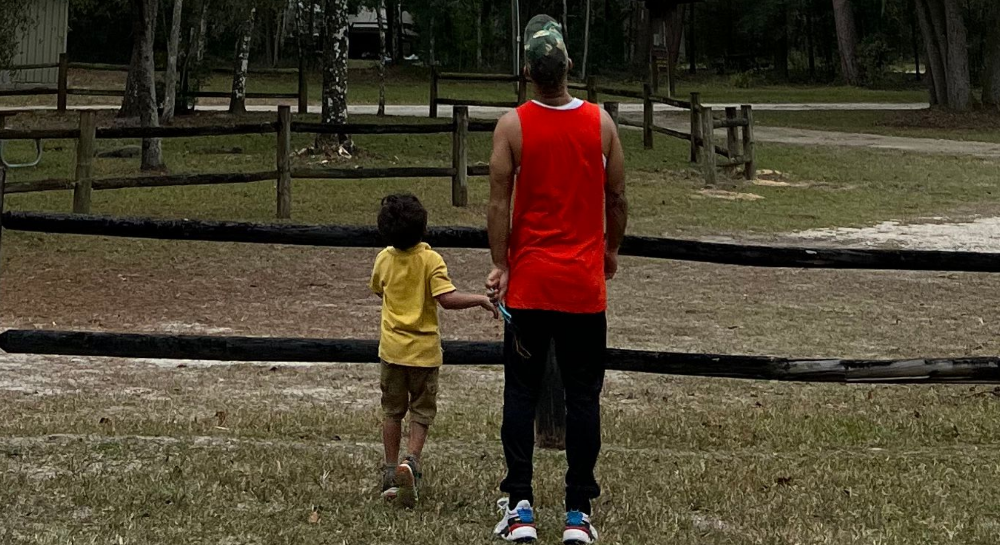
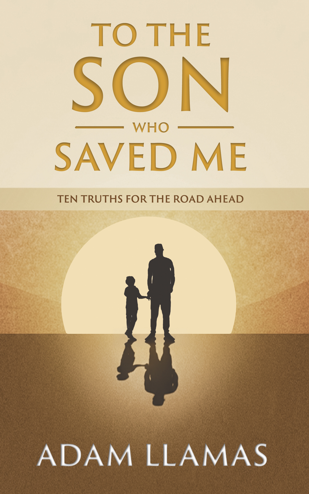

"Because sometimes the person who saves you… is the one who calls you Dad."

Written for one. Speaks to many.
Ten Truths for the Road Ahead
Ten truths. One son. A life forever changed.
To the Son Who Saved Me is a deeply personal reflection on fatherhood, healing, and the quiet ways love can change a life.
This is not a perfect story. It's a complicated one. The kind where showing up wasn't easy, the circumstances weren't ideal, and the road to becoming a father ran through some hard terrain. But a father showed up anyway. And in doing so, he found himself.
Written as a father speaking directly to his son, not as an expert but as a man who lived it, this book shares ten truths earned through real experience. Lessons about gratitude, honesty, accountability, and what it means to love someone more than you love your own comfort.
"This book brought tears to my eyes. You can feel the struggles, the realizations, and everything life throws at you along the way."
★★★★★ Verified Amazon Review
"A book of guidance and real experience."
★★★★★ Verified Amazon Review
Not rules. Not a manual.— Adam Llamas
Just truths I earned the hard way.
★★★★★
"Some books speak to you. This one stays with you."
★★★★★
"A legacy of love, truth, and hard-earned wisdom poured out with breathtaking honesty."
★★★★★
"The ten truths in this book don't feel like lessons — they feel like anchors. Grounded in gratitude, integrity, courage, discipline, and love."
★★★★★
"This book had me emotional. You can feel the struggles, the realizations, and everything life throws at you along the way."
I didn't come into this with a blueprint.
I grew up figuring things out as I went. Watching. Learning. Getting it right sometimes and getting it wrong a lot. Then trying again.
For years, music was my outlet. It gave me direction, purpose, and a way to move through life when I didn't always have the words. But eventually, that changed.
Then my son came into my life. Life slowed everything down and forced me to look deeper at who I really was.
I sat still and faced things I had avoided for years. I didn't want to pass anything down that I hadn't dealt with myself. That's where YamEyes Vision was born.
Everything I had been through finally had somewhere to go.
This book, and everything that comes next, came from that.
Every word in this book came from a real place.
The music did too.
If you want to feel it a little deeper, hit play.
If you're looking for something custom...
I create original music built around feeling and story.
Just real updates when there's something worth sharing.